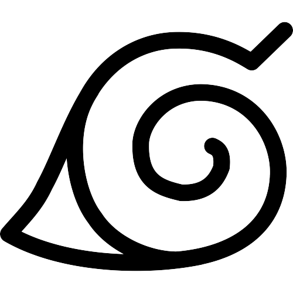
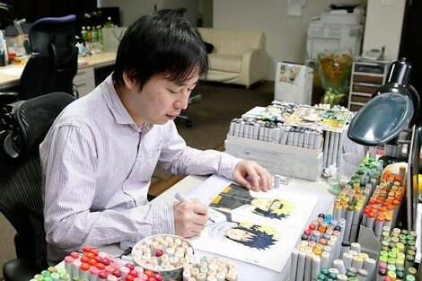

Masashi Kishimoto
Mangaká


Masashi Kishimoto é um mangaká e escritor japonês, entre seus maiores trabalhos está Naruto criado em 1997, e serializado na Weekly Shōnen Jump
Acontecimentos
1998: Karakuri e Hop Step Award
1999: Naruto é um sucesso mundial
Saiba mais